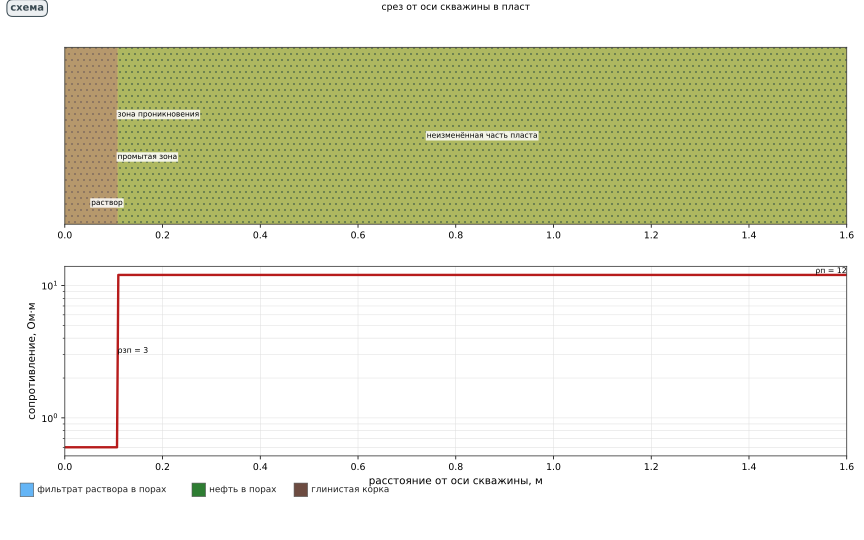
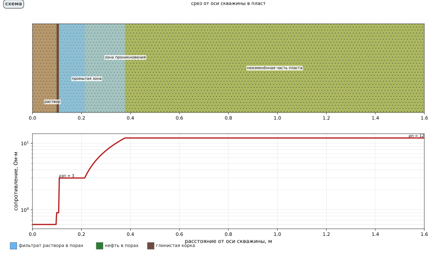
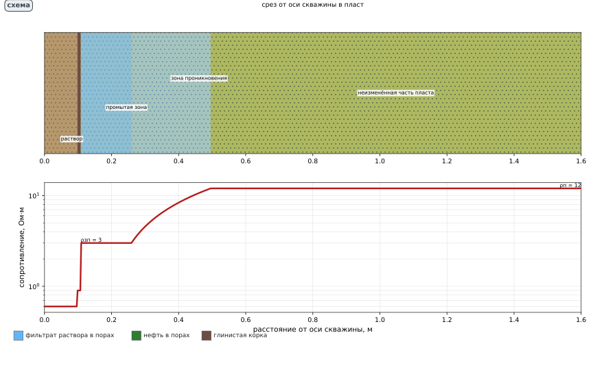
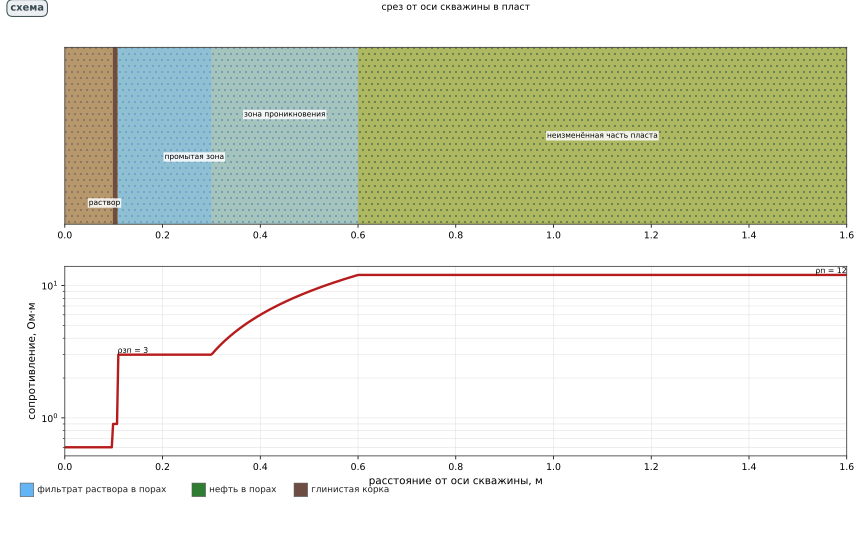
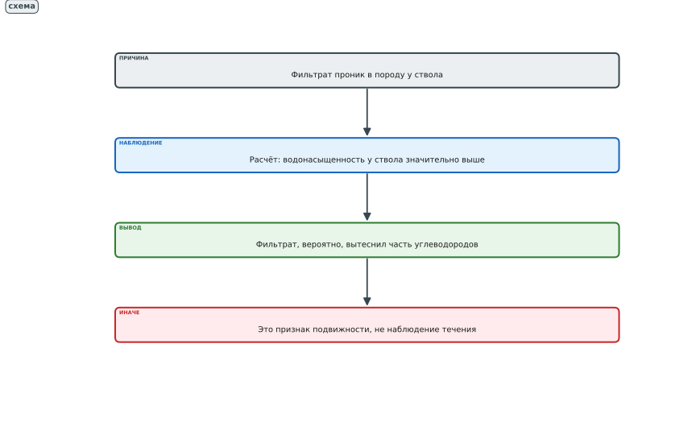
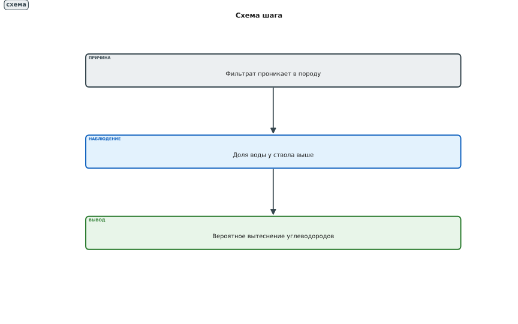

Сравните, сколько воды в порах у ствола и вдали от него.
Заметно большая доля воды у ствола служит косвенным признаком вытеснения.
Пороговая идея. Резкий контраст двух зон даёт косвенный признак подвижности. модель
Анимация: как это происходит





1 / 6
Показать ствол и пустить вопрос; у зрителя ещё нет объяснения различия.
Допущения: Радиусы, толщина условной корки, сопротивления и выбор песчаника — условные значения и выбор для шаблона, в книге для этого признака не заданы.; Параметр анимации — условный ход процесса, не шкала времени; синхронный профиль сопротивления показывает только зоны, не величину водонасыщенности.; Не предполагаем, что детерминированная схема доказывает подвижность реального флюида..
Как это работает
Механизм
В промытой зоне, изменённой фильтратом у ствола, оценивают долю воды. Эта доля помогает судить о подвижности углеводородов — способности нефти или газа вытесняться. стр. 127
«Water saturation of the flushed zone ($S_{xo}$) can be used as an *indicator of hydrocarbon moveability*.»

Схема связывает исходный признак с проверкой и выводом.
Класс B · схема · нарисовано кодом · стр. 127
Ограничение
Сравните промытую зону с незатронутой зоной, куда фильтрат не дошёл. Если у ствола воды намного больше, автор считает вытеснение вероятным. О движении судят по различию насыщенностей, а не по прямому наблюдению. стр. 127
«For example, if the value of $S_{xo}$ is much larger than $S_w$, then hydrocarbons in the flushed zone have probably been moved or flushed out of the zone nearest the borehole by the invading drilling fluids ($R_{mf}$).»
Решение на данных
От контраста к гипотезе
Признаки
Промытая зона
Незатронутая зона
Сильный контраст долей воды
↓
Правило
Если промытая зона намного более водонасыщена, вытеснение вероятно. стр. 127
↓
Вывод
Оставьте вывод вероятностным.
Потренируйтесь
Дано: В ближней зоне воды значительно больше, чем вдали. (модель)
Насыщенности сравнивают, но движение не наблюдают.
Цифры и условия
Признак возникает, если доля воды в промытой зоне намного больше, чем вдали от ствола. стр. 127
Что это значит для данных по книге
Две оценки водонасыщенности → Предварительный признак подвижности.
Вход
Две оценки водонасыщенности
Выход
Предварительный признак подвижности
Где ломается
Когда сравнение интерпретируют как прямое измерение
Где здесь ручной труд специалиста
Входные данные
Две оценки водонасыщенности
Ручные шаги
Сравните водонасыщенность промытой и незатронутой зон: если первая намного больше, вероятно вытеснение.
Точки суждения
Является ли различие достаточно выраженным
Время
Зависит от полноты входных данных и числа проверок; глава не даёт оценки времени.
Типичные ошибки
Считать вероятное вытеснение доказанным
Аналогия модель
Сравнение изменённого участка с контрольным помогает предположить, что изменилось.
Где аналогия перестаёт работать: Контроль — соседняя часть пласта, а не лабораторно заданная копия.
Новые понятия
Промытая зона (flushed zone)
Прилегающая к стволу часть пласта, изменённая фильтратом раствора. модель
Незатронутая зона (uninvaded zone)
Часть пласта, куда не проник фильтрат бурового раствора. модель
Водонасыщенность (water saturation)
Доля порового пространства, заполненная водой. модель
Фильтрат раствора (mud filtrate)
Жидкая часть бурового раствора, проникающая в пласт. модель
Все утверждения шага с дословной цитатой автора и страницей книги (по PDF).
Водонасыщенность промытой зоны служит признаком подвижности углеводородов. наблюдение
«Water saturation of the flushed zone ($S_{xo}$) can be used as an *indicator of hydrocarbon moveability*.»
Если насыщенность промытой зоны намного выше, проникшая жидкость, вероятно, вытеснила углеводороды из ближней зоны. вывод
«For example, if the value of $S_{xo}$ is much larger than $S_w$, then hydrocarbons in the flushed zone have probably been moved or flushed out of the zone nearest the borehole by the invading drilling fluids ($R_{mf}$).»
Исходный текст урока
Стр. 127 · ARCHIE WATER SATURATIONS: $S_W$ AND $S_{XO}$
Water saturation of the flushed zone ($S_{xo}$) can be used as an *indicator of hydrocarbon moveability*. For example, if the value of $S_{xo}$ is much larger than $S_w$, then hydrocarbons in the flushed zone have probably been moved or flushed out of the zone nearest the borehole by the invading drilling fluids ($R_{mf}$).